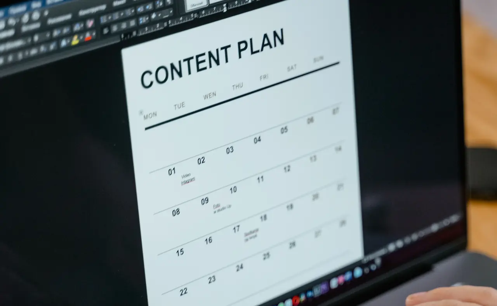
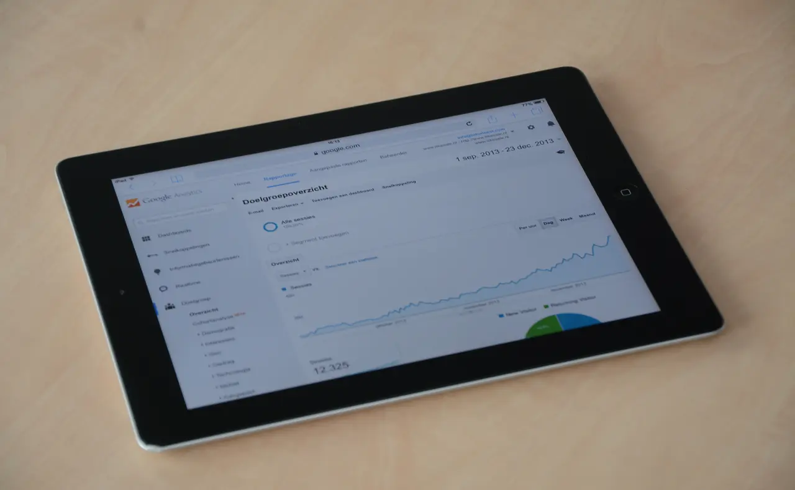

Website
Quản trị website sau bàn giao: nhận gì, cập nhật thế nào và đo bằng GA4, Search Console
Ngày bàn giao là lúc website bắt đầu làm việc cho doanh nghiệp, không phải lúc kết thúc. Bài này liệt kê những gì bạn phải nhận, cách cập nhật nội dung đều đặn mà không làm hỏng giao diện, các chỉ số GA4 và Search Console đáng xem, và một lịch kiểm tra tuần, tháng, quý để làm theo ngay.

Quản trị website sau bàn giao gồm ba việc: giữ quyền sở hữu mọi tài khoản và mã nguồn, cập nhật nội dung đều đặn theo lịch, và đo hiệu quả bằng Google Analytics 4 (GA4) cùng Google Search Console. Doanh nghiệp nhỏ không cần đội kỹ thuật riêng: một người phụ trách, khoảng 30 phút mỗi tuần và vài giờ mỗi tháng là đủ để website không bị bỏ quên.
Bài chi phí duy trì website hằng năm đã nói về các khoản tiền phải trả. Bài này nói về phần việc: nhận bàn giao những gì, ai cập nhật gì, xem chỉ số nào và kiểm tra theo nhịp nào. Tính năng của Google dẫn theo tài liệu trợ giúp chính thức tại thời điểm viết (11/2026).
Nhận bàn giao website: danh sách phải có
Trước khi thanh toán đợt cuối, hãy đối chiếu đủ ba nhóm dưới đây.
Tài khoản và quyền truy cập
- Tên miền: tài khoản tại nhà đăng ký, đứng tên doanh nghiệp, email nhận thông báo là email chung của công ty.
- Hosting hoặc nền tảng triển khai: tài khoản đăng nhập, gói đang dùng, ngày gia hạn.
- Trang quản trị nội dung (CMS): ít nhất một tài khoản quyền cao nhất thuộc doanh nghiệp, các tài khoản biên tập cho nhân viên.
- GA4 và Search Console: doanh nghiệp phải là chủ sở hữu (quản trị viên trong GA4, chủ sở hữu đã xác minh trong Search Console), bên làm web chỉ nên giữ quyền thấp hơn. Google giải thích các cấp quyền trong Search Console tại trang quản lý chủ sở hữu và người dùng.
- Các dịch vụ đi kèm: email tên miền, Zalo OA, công cụ gửi form, bản đồ, CDN nếu có.
Mã nguồn và dữ liệu
- Toàn bộ mã nguồn (kho Git hoặc tệp nén) và quyền truy cập kho nếu website được dựng bằng code.
- Bản sao lưu cơ sở dữ liệu và thư viện ảnh gốc ở độ phân giải cao.
- Tệp thiết kế, logo dạng vector.
Tài liệu
- Hướng dẫn dùng trang quản trị: đăng bài, sửa trang, thay ảnh, có hình chụp màn hình hoặc video ngắn.
- Danh sách sự kiện đang đo trong GA4 (ví dụ: bấm Zalo, gửi form) và nơi cấu hình chúng.
- Phạm vi bảo hành: lỗi nào được sửa miễn phí, trong bao lâu, liên hệ qua kênh nào.
Nguyên tắc: mọi tài khoản đứng tên doanh nghiệp, bên làm web được mời vào với quyền phù hợp. Khi thôi hợp tác, bạn chỉ cần gỡ quyền của họ, không phải đi xin lại tài sản của chính mình.
Cập nhật nội dung: ai làm, làm gì, bao lâu một lần
Giá cũ, khuyến mãi hết hạn nằm ở trang chủ khiến khách nghĩ doanh nghiệp đã ngừng hoạt động. Cách đơn giản nhất là chia nội dung theo tần suất thay đổi.
| Loại nội dung | Tần suất gợi ý | Người phụ trách | Lưu ý |
|---|---|---|---|
| Khuyến mãi, thông báo, lịch nghỉ lễ | Khi có thay đổi, gỡ ngay khi hết hạn | Marketing hoặc chủ doanh nghiệp | Ghi ngày kết thúc vào lịch để nhớ gỡ |
| Sản phẩm, dịch vụ, bảng giá | Hằng tháng hoặc khi đổi giá | Kinh doanh | Giá trên web phải khớp giá nhân viên báo qua Zalo |
| Bài viết blog, tin tức | 2–4 bài mỗi tháng nếu làm SEO | Marketing hoặc thuê viết | Đều đặn quan trọng hơn dồn dập |
| Ảnh dự án, ảnh không gian | Theo quý | Marketing | Thay ảnh cũ bằng ảnh thật mới chụp |
| Trang giới thiệu, đội ngũ, chứng nhận | Nửa năm hoặc khi có thay đổi | Hành chính, nhân sự | Gỡ người đã nghỉ, thêm chứng nhận mới |
| Thông tin liên hệ, địa chỉ, giờ mở cửa | Kiểm tra mỗi quý | Người phụ trách website | Đồng bộ với Google Maps và fanpage |

Đăng bài viết mới đúng cách
- Chọn một câu hỏi khách hay hỏi làm chủ đề, ví dụ "bảo hành bao lâu".
- Đặt tiêu đề và đường dẫn ngắn, không dấu, chứa cụm từ khách thật sự gõ. Không đổi đường dẫn sau khi đã đăng.
- Dùng tiêu đề phụ (H2, H3) có sẵn trong trình soạn thảo thay vì tự tô đậm, tăng cỡ chữ.
- Gắn liên kết tới trang dịch vụ liên quan và một hai bài cũ.
- Viết mô tả ngắn (meta description) và chọn ảnh đại diện.
- Xem trước trên điện thoại rồi mới bấm đăng.
Nguyên tắc SEO cho từng trang có trong bài checklist thiết kế website chuẩn SEO 2026.
Thay ảnh mà không làm website chậm
- Giữ đúng tỷ lệ khung ảnh cũ (ví dụ ảnh ngang 16:9 thay bằng ảnh ngang 16:9) để bố cục không bị xô lệch.
- Thu nhỏ ảnh chụp điện thoại (thường vài MB) trước khi tải lên, trừ khi trang quản trị đã tự nén và tạo nhiều cỡ ảnh.
- Điền mô tả ảnh (alt) bằng tiếng Việt, mô tả đúng nội dung ảnh.
- Chỉ dùng ảnh doanh nghiệp có quyền sử dụng: ảnh tự chụp, ảnh mua bản quyền hoặc ảnh từ kho miễn phí cho phép dùng thương mại.
Sau mỗi lần thay ảnh lớn ở trang chủ, nên kiểm tra lại tốc độ bằng PageSpeed Insights. Theo web.dev, ngưỡng "tốt" của Core Web Vitals là LCP (thời gian hiện phần nội dung lớn nhất) từ 2,5 giây trở xuống, INP từ 200 mili giây trở xuống và CLS từ 0,1 trở xuống. Một ảnh bìa nặng thường là nguyên nhân đầu tiên khiến LCP vượt ngưỡng.
GA4: những chỉ số chủ doanh nghiệp nên xem
Website doanh nghiệp chỉ cần GA4 trả lời ba câu: khách đến từ đâu, xem trang nào, và bao nhiêu người liên hệ. Câu thứ ba hay bị bỏ trống nhất.
Đo hành động liên hệ bằng sự kiện chính
Trong GA4, những hành động có giá trị với doanh nghiệp được đánh dấu là sự kiện chính (key event). Google đã đổi tên "chuyển đổi" thành "sự kiện chính" trong GA4; theo hướng dẫn đánh dấu sự kiện chính, bạn bật tùy chọn này cho một sự kiện trong phần Quản trị, mục hiển thị dữ liệu, Sự kiện; thuộc tính GA4 tiêu chuẩn đánh dấu được tối đa 30 sự kiện chính. Với website doanh nghiệp, nên có tối thiểu:
- Gửi form liên hệ, form báo giá: Google có sự kiện khuyến nghị
generate_leadcho việc khách gửi form hoặc yêu cầu thông tin, mô tả trong danh sách sự kiện khuyến nghị. Nên kích hoạt khi form gửi thành công, không phải khi khách vừa bấm nút. - Bấm Zalo: một sự kiện tùy chỉnh, ví dụ
click_zalo, gắn vào mọi nút và liên kết dẫn tới zalo.me. - Bấm gọi điện: sự kiện cho liên kết dạng
tel:, đặc biệt quan trọng trên điện thoại. - Tùy ngành: đặt lịch hẹn, tải bảng giá PDF, bấm chỉ đường Google Maps.

Các báo cáo nên mở mỗi tháng
- Thu nạp lưu lượng truy cập: phiên truy cập theo kênh (tìm kiếm tự nhiên, trực tiếp, mạng xã hội, quảng cáo) và số sự kiện chính theo từng kênh.
- Trang và màn hình: trang được xem nhiều nhất; đối chiếu với trang bạn muốn khách xem nhất.
- Sự kiện chính theo trang đích: trang nào thực sự mang về liên hệ.
Một cài đặt nên đổi ngay: GA4 cho chọn thời gian lưu dữ liệu cấp sự kiện là 2 tháng hoặc 14 tháng với thuộc tính tiêu chuẩn (trợ giúp Google Analytics về lưu giữ dữ liệu). Cài đặt này ảnh hưởng tới báo cáo khám phá và phễu, không ảnh hưởng báo cáo tổng hợp chuẩn. Chọn 14 tháng để so sánh được cùng kỳ năm trước khi phân tích sâu.
Google Search Console: hiệu suất, lập chỉ mục, sitemap
Search Console cho biết website hiện ra trên Google thế nào trước khi khách bấm vào. Ba báo cáo dưới đây là đủ cho phần lớn doanh nghiệp.
Báo cáo Hiệu suất
Theo trợ giúp Search Console về báo cáo Hiệu suất, báo cáo hiển thị số lượt nhấp, số lượt hiển thị, tỷ lệ nhấp (CTR) và vị trí trung bình trên kết quả tìm kiếm, lọc được theo truy vấn, trang, quốc gia, thiết bị, với dữ liệu khoảng 16 tháng gần nhất. Cách đọc nhanh:
- Hiển thị tăng, nhấp không tăng: trang có mặt trên Google nhưng tiêu đề, mô tả chưa đủ hấp dẫn, hoặc vị trí còn thấp.
- Truy vấn bạn không ngờ tới: gợi ý chủ đề cho bài viết tiếp theo.
- Trang có vị trí trung bình 8–20: đã ở trang 1 hoặc 2, thường là ứng viên tốt để cập nhật nội dung cho sâu hơn.
Báo cáo Lập chỉ mục trang
Báo cáo này cho biết bao nhiêu trang đã được Google lập chỉ mục và lý do các trang còn lại chưa được. Không phải mọi trang "chưa lập chỉ mục" đều là lỗi: trang trùng lặp có thẻ canonical, trang chuyển hướng là bình thường. Điều cần để ý là trang quan trọng (trang dịch vụ, bài viết mới) nằm sai nhóm. Để kiểm tra một trang cụ thể, dùng công cụ Kiểm tra URL, công cụ này cũng cho phép yêu cầu Google thu thập lại trang vừa sửa.
Báo cáo Sơ đồ trang web
Gửi sitemap một lần trong báo cáo Sơ đồ trang web, sau đó chỉ cần xem trạng thái có báo "Thành công" và ngày Google đọc gần nhất. Website tự sinh sitemap thì không cần gửi lại sau mỗi bài.
Hãy bật nhận thông báo email của Search Console bằng email chung của công ty để biết sớm khi Google phát hiện lỗi hoặc vấn đề bảo mật.
Lịch kiểm tra hằng tuần, hằng tháng, hằng quý
Checklist dưới đây làm được ngay, không cần kiến thức lập trình. In ra hoặc chép vào lịch làm việc của người phụ trách website.
Mỗi tuần (khoảng 30 phút)
- Mở website trên điện thoại và máy tính, bấm thử nút Zalo, nút gọi, gửi thử một form và kiểm tra email nhận được.
- Xem GA4: số sự kiện chính trong tuần có giảm bất thường không. Giảm về 0 thường do form hoặc mã đo bị lỗi.
- Gỡ khuyến mãi, thông báo đã hết hạn.
Mỗi tháng (1–2 giờ)
- Search Console, báo cáo Hiệu suất: so sánh lượt nhấp, hiển thị với tháng trước; ghi lại 5 truy vấn mới đáng chú ý.
- GA4: kênh nào mang nhiều sự kiện chính nhất, trang đích nào hiệu quả nhất.
- Đăng bài viết mới theo lịch nội dung, cập nhật giá, sản phẩm.
- Kiểm tra báo cáo Lập chỉ mục trang xem bài mới đã được lập chỉ mục chưa.
- Với website WordPress, sao lưu rồi cập nhật plugin, giao diện (xem thêm WordPress hay code tay).
Mỗi quý (nửa ngày)
- Rà thông tin liên hệ, giờ mở cửa, đội ngũ, chứng nhận.
- Chạy PageSpeed Insights cho trang chủ và 2–3 trang dịch vụ chính.
- Thử khôi phục một bản sao lưu (hoặc yêu cầu bên kỹ thuật xác nhận bản sao lưu dùng được).
- Rà danh sách người có quyền trong CMS, hosting, GA4, Search Console; gỡ nhân viên đã nghỉ và đối tác đã thôi hợp tác.
- Kiểm tra ngày hết hạn tên miền, hosting, bản quyền phần mềm.
Ví dụ minh họa theo ngành
Các tình huống dưới đây là giả định để minh họa cách áp dụng, không phải khách hàng thật.
- Phòng khám nha khoa ở Đà Nẵng: sự kiện chính là "đặt lịch hẹn" và "bấm gọi". Mỗi tuần lễ tân gửi thử một lịch hẹn; mỗi tháng đăng hai bài trả lời câu hỏi bệnh nhân hay hỏi. Search Console cho thấy truy vấn có tên quận đem lại nhiều lượt nhấp, nên trang dịch vụ được bổ sung địa chỉ, bản đồ rõ hơn.
- Xưởng nội thất ở Bình Dương: sự kiện chính là "tải catalogue" và "bấm Zalo". Mỗi quý thay ảnh dự án mới bàn giao vào trang dự án, giữ đúng khung ảnh ngang. Báo cáo GA4 cho thấy khách từ điện thoại chiếm phần lớn, nên ưu tiên kiểm tra giao diện điện thoại mỗi lần cập nhật.
Sai lầm thường gặp sau bàn giao
- GA4, Search Console nằm trong tài khoản cá nhân của nhân viên hoặc bên làm web. Người đó nghỉ, doanh nghiệp mất toàn bộ dữ liệu lịch sử.
- Có GA4 nhưng không đánh dấu sự kiện chính. Báo cáo chỉ có lượt truy cập, không ai biết website mang về bao nhiêu liên hệ.
- Đo sự kiện "gửi form" khi khách mới bấm nút, kể cả khi form báo lỗi, làm số liên hệ bị đếm cao hơn thực tế.
- Đổi đường dẫn bài viết cũ mà không đặt chuyển hướng 301, làm mất thứ hạng trang đã có.
- Tải ảnh chụp điện thoại nguyên gốc lên trang chủ, website chậm hẳn trên mạng di động.
- Chỉ nhìn tổng lượt truy cập. Lượt truy cập tăng mà liên hệ không tăng nghĩa là cần xem lại nội dung hoặc nút liên hệ, không phải tin vui.
Bàn giao và hỗ trợ sau bàn giao tại Dream Labs
Khi bàn giao, Dream Labs chuyển cho doanh nghiệp toàn bộ mã nguồn, tài khoản đứng tên doanh nghiệp, tài liệu hướng dẫn và danh sách sự kiện GA4 đã cài (bấm Zalo, bấm gọi, gửi form thành công). GA4 và SEO cơ bản có ở mọi gói. Gói Cơ bản 8.000.000đ có bảo hành 6 tháng. Gói Chuyên nghiệp 18.000.000đ có thêm trang quản trị (CMS) để bạn tự đăng bài, sửa nội dung, thay ảnh, cùng bảo hành 6 tháng. Gói Cao cấp Liên hệ có bảo trì 12 tháng cho website nhiều tính năng như đa ngôn ngữ, thanh toán, CRM.
| Gói | Giá | Thời gian | Bao gồm |
|---|---|---|---|
| Cơ bản | 8.000.000đ | 7–10 ngày4 vòng sửa | Có mặt chuyên nghiệp trên Google và điện thoại trong khoảng 10 ngày, khách tìm thấy và liên hệ được ngay.
|
| Chuyên nghiệpPhổ biến nhất | 18.000.000đ | 14–21 ngày9 vòng sửa | Website riêng đúng tầm thương hiệu, tự đăng bài để có khách từ Google lâu dài, không phụ thuộc người làm.
|
| Cao cấp | Liên hệ | 30–45 ngàyKhông giới hạn trong phạm vi | Trải nghiệm đủ khác biệt để định vị cao cấp, bán hàng và tiếp khách trực tuyến, phục vụ cả khách nước ngoài.
|
Xem chi tiết tại trang thiết kế website và bảng giá. Nếu bạn đang có website do bên khác làm và muốn kiểm tra đã đủ quyền, đã đo đúng chưa, nhắn Zalo 0934 246 420.
Câu hỏi thường gặp
Sau bàn giao website cần nhận những gì?
Tối thiểu gồm tài khoản tên miền, hosting, trang quản trị nội dung đứng tên doanh nghiệp; quyền quản trị GA4 và quyền chủ sở hữu Search Console; mã nguồn, bản sao lưu dữ liệu, ảnh gốc; tài liệu hướng dẫn sử dụng và điều khoản bảo hành.
Không biết kỹ thuật có tự quản trị website được không?
Được, nếu website có trang quản trị nội dung thân thiện và tài liệu hướng dẫn rõ. Việc đăng bài, sửa giá, thay ảnh giống soạn văn bản. Các việc như sửa giao diện, thêm tính năng vẫn nên nhờ bên kỹ thuật.
Bao lâu nên cập nhật website một lần?
Thông tin khuyến mãi, giá cập nhật ngay khi thay đổi. Nếu làm SEO, đăng 2–4 bài mỗi tháng là nhịp nhiều doanh nghiệp nhỏ duy trì được. Thông tin liên hệ, đội ngũ nên rà mỗi quý.
GA4 khác Search Console thế nào?
Search Console cho biết website xuất hiện trên Google ra sao: lượt hiển thị, lượt nhấp, truy vấn, trang đã lập chỉ mục. GA4 cho biết khách làm gì khi đã vào website: xem trang nào, đến từ kênh nào, có bấm Zalo hay gửi form không. Nên dùng cả hai.
Làm sao biết website mang về bao nhiêu khách liên hệ?
Cài sự kiện cho nút Zalo, nút gọi và form gửi thành công, rồi đánh dấu chúng là sự kiện chính trong GA4. Sau đó xem số sự kiện chính theo tháng, theo kênh và theo trang đích.
Vì sao trang mới đăng chưa xuất hiện trên Google?
Google cần thời gian để thu thập và lập chỉ mục. Kiểm tra sitemap đã có trang đó chưa, dùng công cụ Kiểm tra URL trong Search Console để xem trạng thái và yêu cầu lập chỉ mục. Lập chỉ mục cũng không đảm bảo trang lên thứ hạng cao ngay.
Nguồn ảnh: ảnh bìa: Lukas Blazek / Pexels · ảnh 1: MART PRODUCTION / Pexels · ảnh 2: weCare Media / Pexels · ảnh 3: RDNE Stock project / Pexels. Ảnh dùng theo giấy phép miễn phí của Pexels, chỉ mang tính minh họa.
Bắt đầu cùng Dream Labs
Mới nhận bàn giao website và chưa biết bắt đầu từ đâu?
Nhắn Zalo cho Dream Labs đường dẫn website của bạn. Chúng tôi xem giúp bạn đã đủ quyền quản trị chưa, GA4 và Search Console đã đo đúng chưa, và nên cập nhật gì trước.